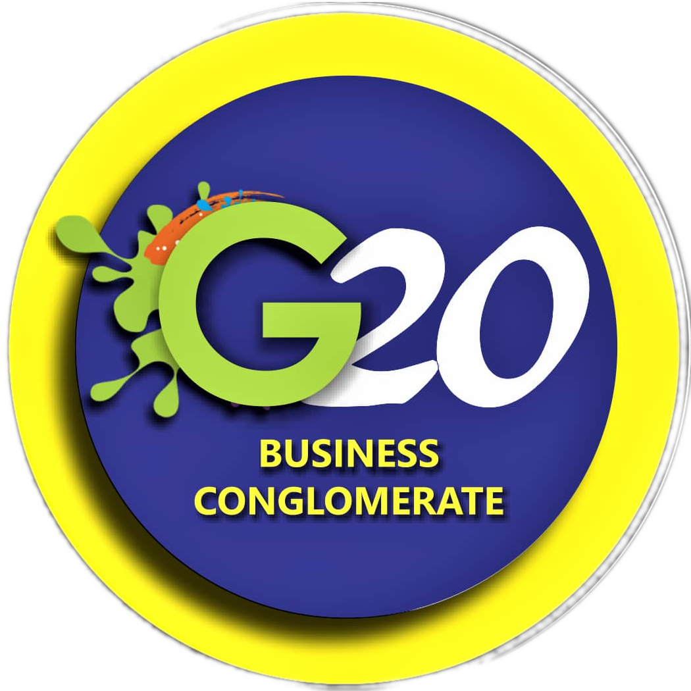

a business conglomerate
made up of 50 independent limited liability companies and synergies

made up of 50 independent limited liability companies and synergies
The G20 conglomerate is an enterpreneurial platfrom made up of fifty (50) independent limited liability companies and synergies run by dynamic technocrats. Partner companies on the G20 platform include global construction giant ASHTROM (with an annual turnover of USD $1.2BILLION), Asseco (the 5th laargest IT company in europe, employing over 24,000 people in more than 52 countries, listed on the Warsaw stock exchange, Tel Aviv Stock Exchange and the New York NASDAQ), Agroplus Africa Systems Ltd(owners and operators of the first hydroponics farm in sub-Saharan Africa), strata Investment Inc. New York (with a capital base of over US$2.3BILLION) and the ABG Group (owners of Africa's first private broadcast station), among others. G20 members share the common vision of leveraging on each other's collective successes, goodwill, experiences, contacts, and access to funding opportunities and grants for the mutual benefit of individual members and the conglomerate
G20 is currently working closely with six focal states in Nigeria on a Public Private Partnership(PPP) model to bring about an economic revolution on the African continent. The partnership has designed templates, processes and procedures to access significant grants, technical assistance/collaboration and cheap loans aimed at creating employment in millions, wealth creation, economic freedom and security.
G20 has extended a hand of partnership to severa institutions, organizations, governments, polytechnics and universities. These partnerships currently focus on the development of Entrepreneurship Clinics, Ranching and Meat Processing, Apiary, ICT, Endowment Funds/Fund raising/Grants, Agriculture (including hydroponics, green houses, food processing & packaging, hatcheries, fishery, poultry, etc), Sewage treatment, Water treatment and bottling, CRS - Campus Related Solutions (including e-send & e-receive of transcript, online acadamy, etc) and a host of other areas
Benefits from the partnerships with institutions of higher learning goes beyond the partners as it ensures that the different stakeholders have sustainable rewards (eg. students get hands-on practical training and eventually secure gainful employments, communities benefit from direct/indirect employments and wealth creation programmes, women and youth benefit from a variety of employment programmes, etc)